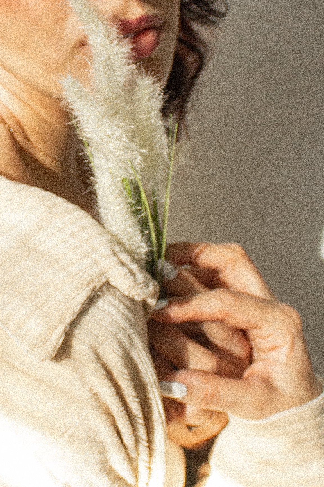

Creative Portraits

Couples

Families
Hey, I'm Cote!
I'm very glad you stopped by! I’m María José but I go by Cote and I'm a photographer based in Salt Lake City Utah. Photography has been something I have really enjoyed since before I can remember.
When I was in my country, Chile, I took a photography course in 2017 and after that course I began studying however I could. I also enjoy landscape and light painting photography so much but just as a hobby. My goal is to create with you, serve you and help you. Go an extra mile to be able to have unique, colorful, fun and representative creative portraits, especially women to feel confident, empowered and to be able to express themselves in front of the camera and with me.
If you are looking for that, you are in the right place. I also love photographing couples and families. I enjoy getting to know different love stories and capture them to treasure forever. You literally don't need any excuse to capture a time of your life with the ones you love. So let's get in touch and let's capture your story!